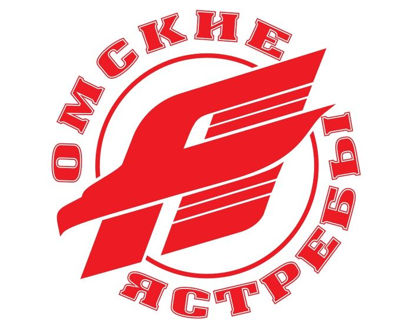
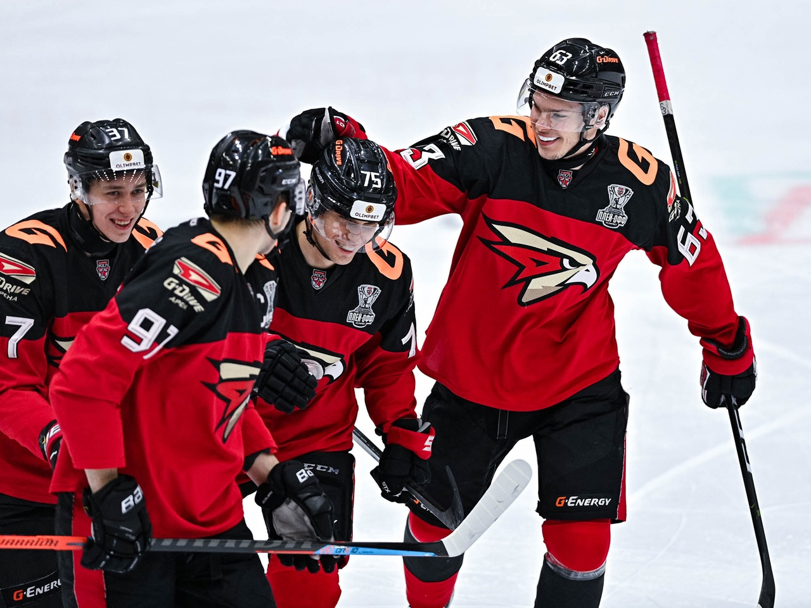

Омский спорт
Хоккейная команда Омские Ястребы

Главная
Омские Ястребы
«Омские ястребы» — молодёжная команда по хоккею с шайбой из Омска выступающая в МХЛ . Является Молодёжной командой Авангарда. Двукратный обладатель Кубка Харламова, чемпионы международного турнира «Hockey night in Boston» и победители Кубка мира среди молодёжных клубных команд. Образована на основе фарм-клуба омского «Авангарда» «Авангард»-2.
С 2009 года выступает в Чемпионате МХЛ. Ранее в структуре ХК «Авангард» существовал фарм-клуб, он был образован в 1993 г. и выступал под названиями:
«Авангард»-2 (1993/94, 1994/95, 2007/08, 2008/09)
«Авангард»-ВДВ (1995/96 — 2002/03)
«Омские ястребы» (2003/04 — 2006/07)
Тренерский штаб:
Главный тренер — Черночуб Виталий Геннадьевич
Тренер — Гуляев Александр Юрьевич
Тренер — Евстафьев Андрей Иванович
Тренер — Земляной Игорь Степанович
Тренер вратарей — 'Агеев Дмитрий Александрович
Тренер по физической подготовке — Пранкевич Сергей Борисович
